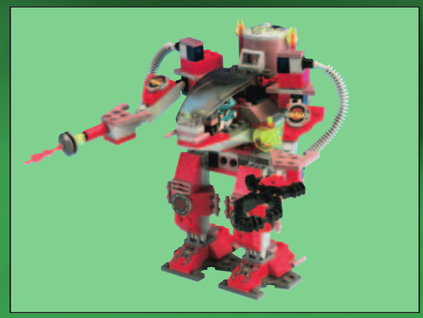

Production Design Target
ЗАВЕРШЕНИЙ LEGO 7314 · без змін

Зберегти відкритий корпус, прозорий ліхтар, задній бак, шланги, червоно-сіру палітру, короткі ноги та точне розміщення обох рук. Політна перебудова з інструкції не входить до цієї цілі.